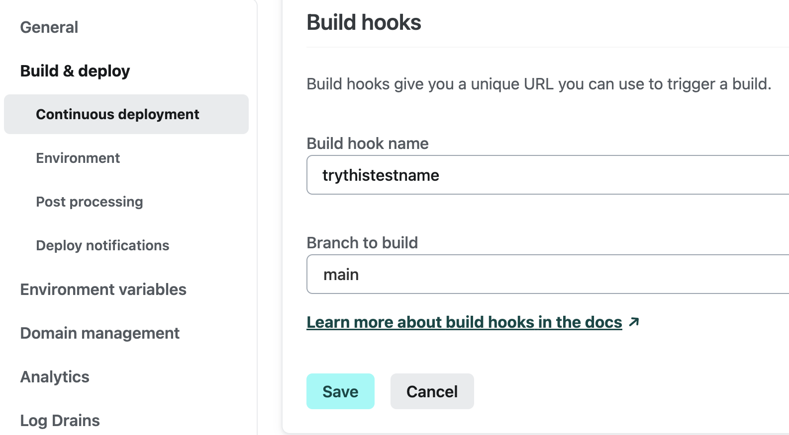
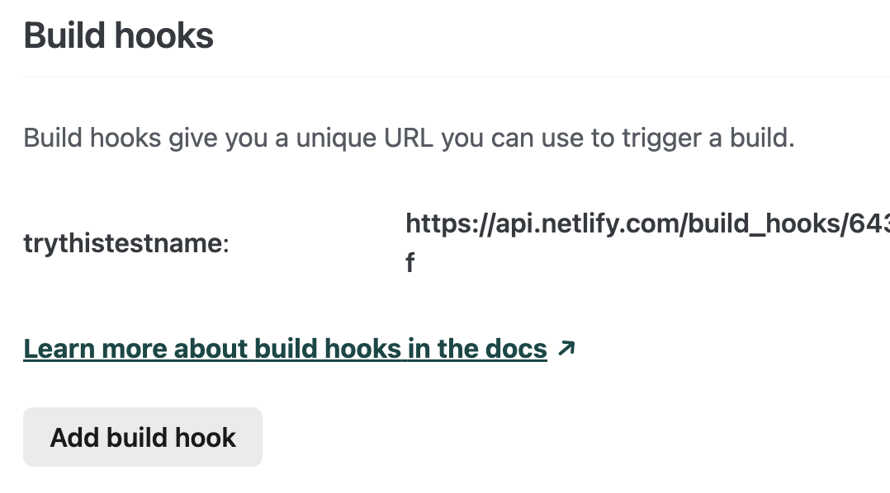
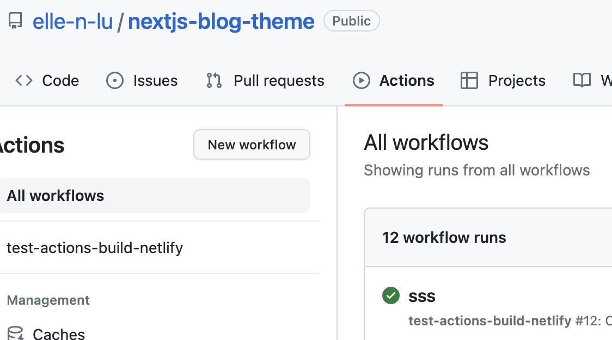

About learning usage of basic Github Actions
- Step:
- Step:
- Step:
- Step:
- Continueing....
Github Action function is a CI/CD way.
Lets try to continually automatic deploy to .
Refer from: Reference 1Deploy a React app Reference 2
Prepare project and push to Github. Make sure there is index.html in root directory if deploy only static webpages.
Netlify connect GitHub and deploy project, this way will let Netlify automatically continually deploy your every push, so normally you don’t need an actions to CD for you. If you just create a project on Netlify or drag your project into there, then you can set up a hooks link, and use that hooks link and Github actions to do CD manually.
 
Create yml file:
In the root folder, create folder,
name: test-actions-build-netlify
on:
push:
branches: [ "main" ]
pull_request:
branches: [ "main" ]
jobs:
build:
runs-on: ubuntu-latest
steps:
- name: trigger netlify build
run: |
curl -X POST -d '{}' [ https://api.netlify.c....Your hooks likn ]
commit and push
